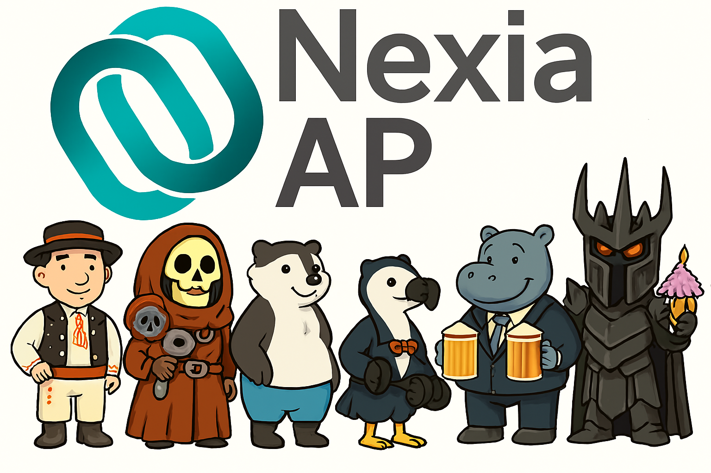

Please
sideload
your add-in to see app body.

Restartovat vzorkovač
1. Metoda výběru vzorku
Vyberte metodu výběru vzorku:
-Vyberte-
Náhodná peněžní procházka
Náhodný generátor čísel
2. Faktor spolehlivosti
Rozklikněte políčko "Nastavit" a definujte velikost faktoru spolehlivosti
Nastavit
3. Hladina Významnosti
Rozklikněte políčko "Nastavit" a vyplňte okénka (3 části).
Nastavit
4. Oblast dat pro výběr vzorku
Označte plochu dat, z které se bude tvořit vzorek:
Vybrat
Označte sloupec obsahující hodnoty a klikněte na "Sloupec":
Sloupec
Výsledky vzorkování:
5. Stanovení velikosti vzorku
Stiskněte tlačítko pro spočítání součtu absolutních hodnot datového pole z úlohy 4.
Spočítat sumu
Stiskněte tlačítko pro vypočítání velikosti vzorku:
Velikost vzorku
Chceme použít vypočtenou velikost vzorku?
-Vyberte-
Ano
Ne
Vyplňte žádanou velikost a zdůvodněte změnu
Potvrdit velikost vzorku
6. Tvorba vzorku
Zvolena metoda:
Velikost vzorku:
Vyloučit hodnoty přesahující významnost?
-Vyberte-
Ano
Ne
Spočítat upravenou sumu
Počet významných položek
Seed pro reprodukovatelnost (volitelně)
Generovat seed
Znovu generovat seed
Vygenerovat výběr vzorku
Vytisknout parametry vzorkovače na:
-Vyberte-
Nad tabulku
Na nový list
Vygenerovat parametry vzorkovače
Nastavení parametrů faktoru spolehlivosti
1. Kontrolní riziko
-Vyberte-
Nízké
Střední
Vysoké
2. Přirozené riziko
-Vyberte-
Nízké
Střední
Vysoké
3. Hladina RMM
-Vyberte-
Nízké
Střední
Vysoké
4. Provádím analytické testy?
-Vyberte-
Ano
Ne
5. Provádím testy kontrol?
-Vyberte-
Ano
Ne
Uložit
Resetovat
Zrušit
Hladina Významnosti
1. O jakou významnost se jedná?
-Vyberte-
Prováděcí
Specifická
Jiná
2. Prosím vyplňte hladinu významnosti (bez desetin):
3. Zdůvodněte použití jiné významnosti než prováděcí
Uložit
Resetovat
Zrušit
Author: Tomáš Pavlovič - developed using GPT-5